Construcción
Control de gastos de obra en tiempo real
De hojas de cálculo con errores a un tablero gerencial confiable.

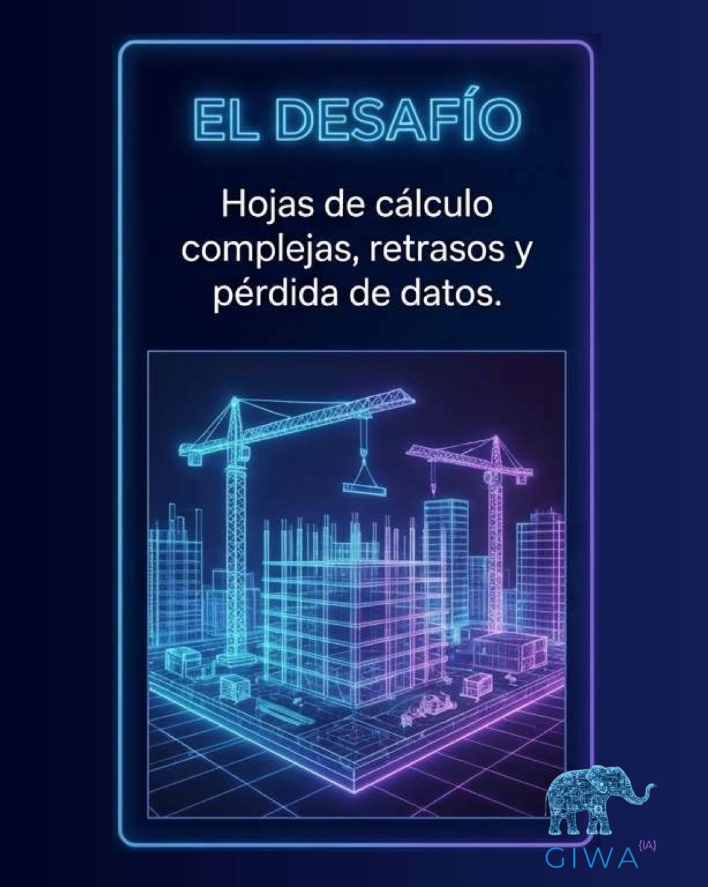
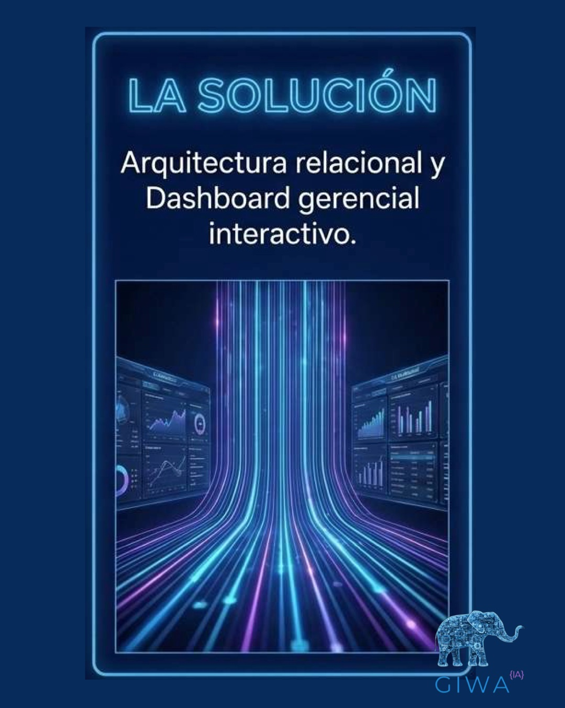
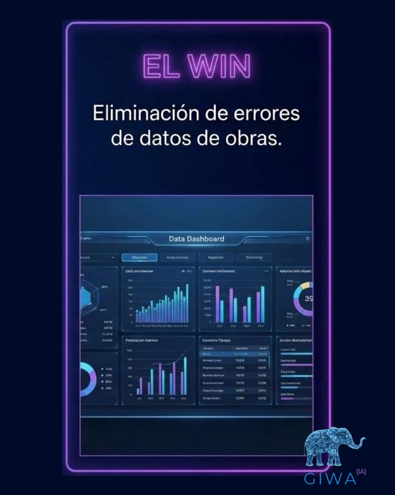
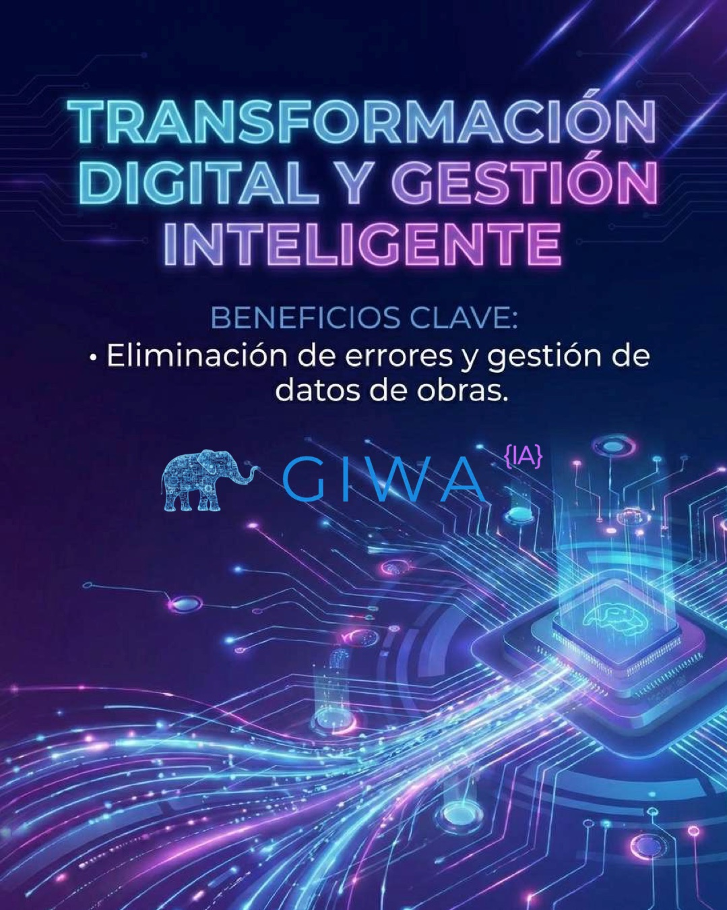
Casos de éxito
Construcción
De hojas de cálculo con errores a un tablero gerencial confiable.




Real estate
Del cuello de botella en el primer contacto a la atención inmediata por WhatsApp.
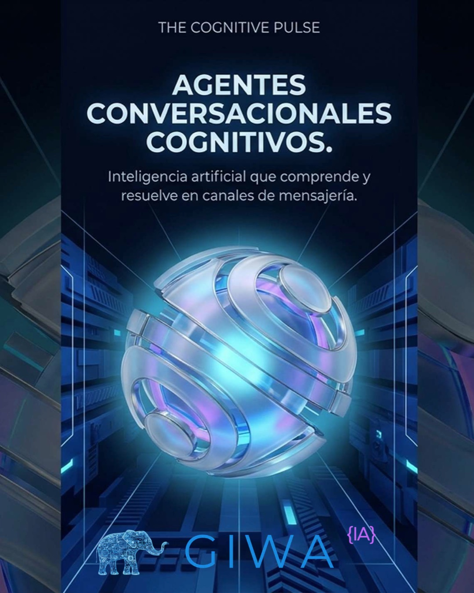
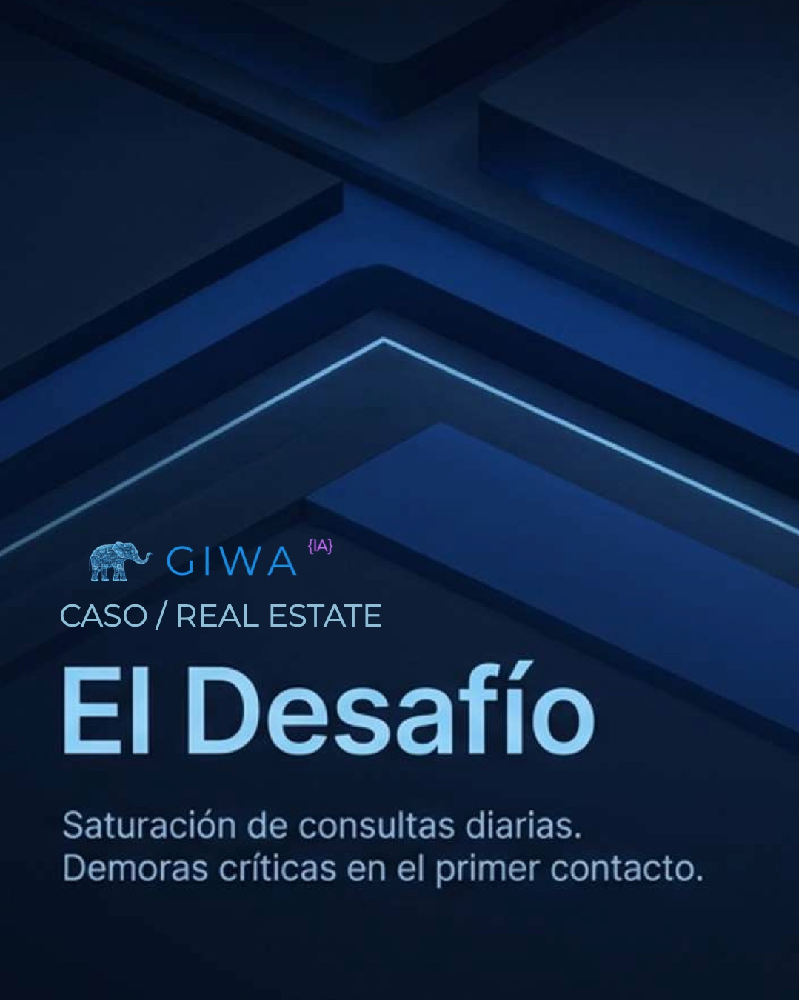
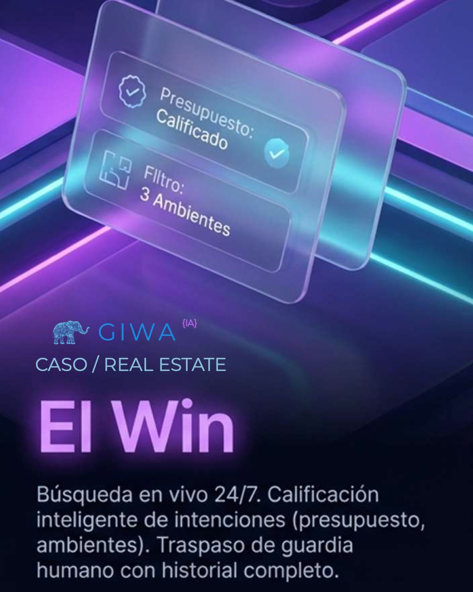
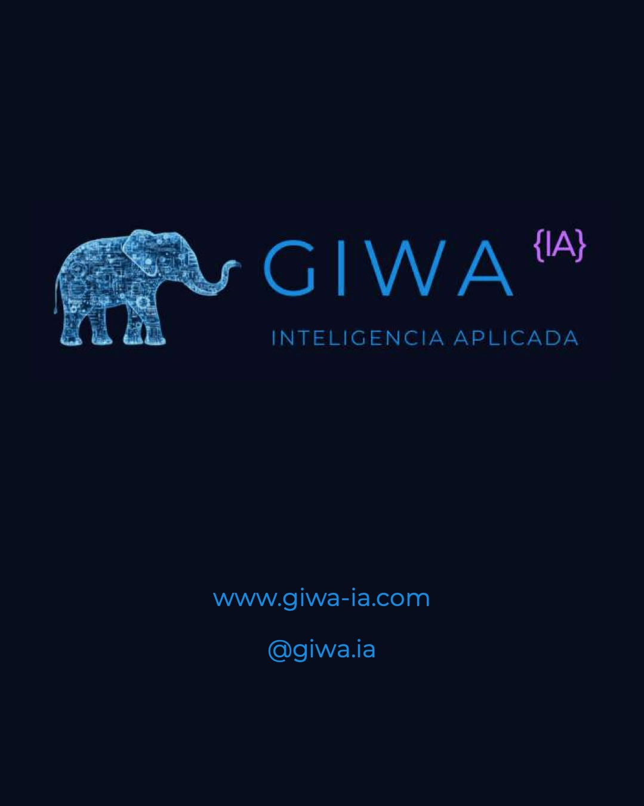
Soporte IT
La IA absorbe lo repetitivo y el equipo técnico vuelve a lo estratégico.
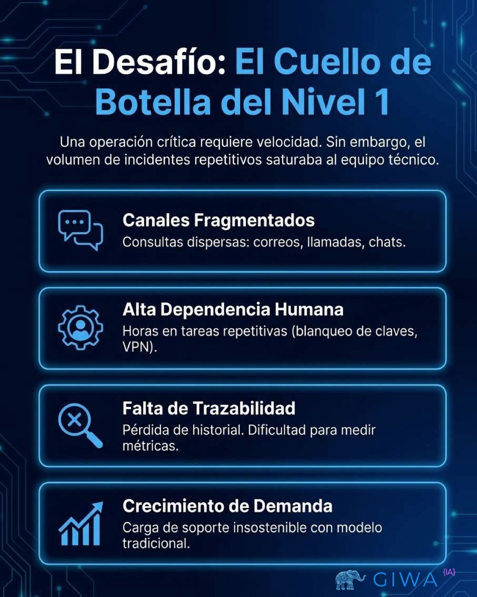
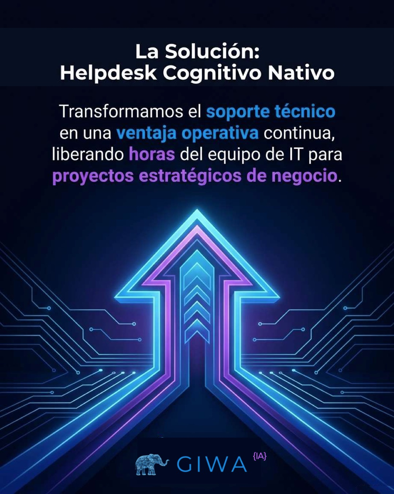
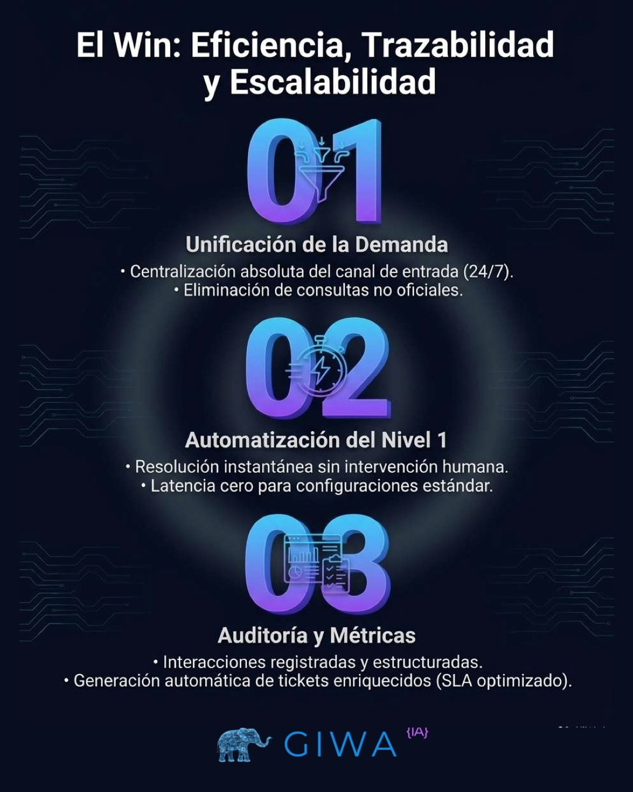
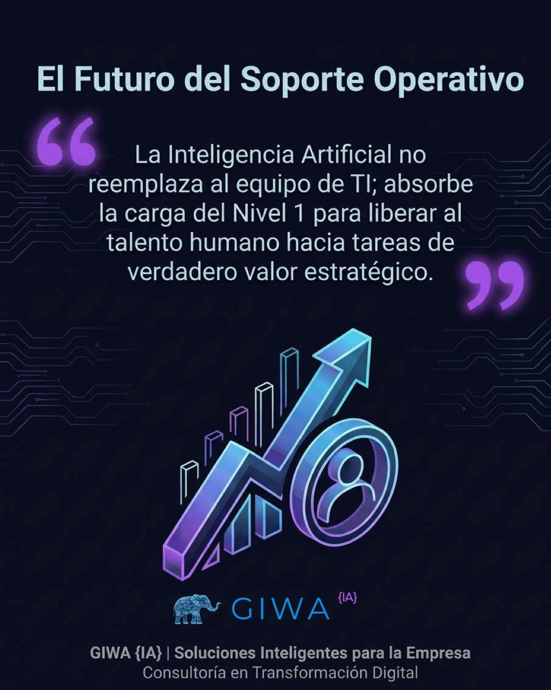
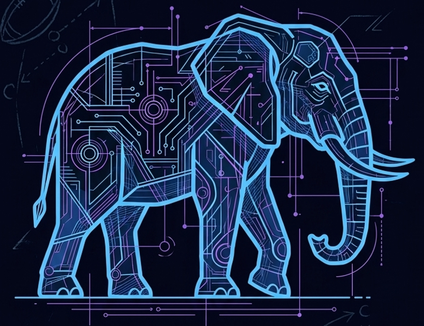
Deporte
Un encuentro histórico de rugby juvenil que durante 18 años se organizó de forma manual. Con la tecnología de GIWA {IA}, el evento dio un salto a un modelo moderno, ordenado y transparente.
Saber másNo te contamos lo que hacemos. Te lo mostramos. Explorá nuestros demos en vivo.
Ver demos